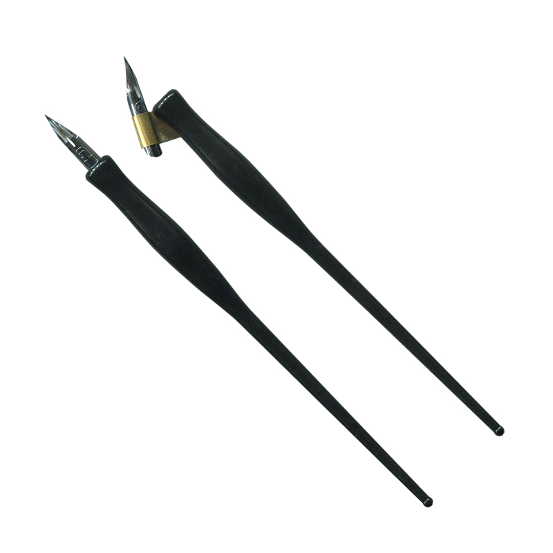

Introduction
Copperplate Calligraphy is the most popular and commonly used calligraphy style among Traditional Calligraphy styles.
Nowadays, copperplate calligraphy can be found on wedding invitations, name cards, menus and many many more. It is widely used by designers or calligraphers as it gives the elegant touch to designs.
As Copperplate Calligraphy is a type of traditional calligraphy, there are rules and guides that must be strictly followed. The slanting angle, strokes, gridlines and such are all fixed.
Unlike modern calligraphy that can be created with various type of tools, Copperplate Calligraphy also requires specific tools.
So, the first step before learning Copperplate is to prepare your tools ✒
Tools
1. Oblique Pen Holder
As Copperplate Calligraphy contains slanted strokes, an oblique pen holder is required to write the letters correctly.
Oblique pen holder also avoids us stressing our wrists.
Oblique pen holders can be found easily in any art shop or online platforms, any brand does not really matter but there are some things to watch out when getting one.
This is a video that talks about what to watch out when getting a oblique pen holder.

**Oblique Pen Holder(Right)
Straight Pen Holder(Left)
2.Pen Nibs
For Copperplate Calligraphy, pen nibs are one of the most important tool. The nib's quality and sensitivity will greatly affect the outcome.
To start, its better to pick a beginner-friendly nib, where the sensitivity is not too high.
Nikko G is a recommended beginner pen nib. Do note that you need to clean your nibs before using to remove the oil on it!
Check on how to prepare a new nib for use.
3.Ink
There are TONS of inks out there and you can just pick your favourite colours. I don't recommend buying expensive ones for beginners, but you may pick waterproof inks or other special inks that suits your purpose.
4.Bleed Proof Papers
The quality of paper is also important so that your ink does not bleed through the paper; or worse where your nib scratches your paper and catch in paper fibers.
The recommended paper weight is 120gsm.
Tutorials
As Copperplate Calligraphy has fixed rules, it is very important to know all of them before you start!
The videos will be rather basic compared to other calligraphy styles as Copperplate acts as the basics of most calligraphy styles.
Keep practicing!
1. This video is a bit lengthy (sorry for that), but it explains the basics and everything you will need to know in detailed. Believe me, its worth it!! There are 3 parts of this video, feel free to check them out too!
2. This video demonstrates both uppercase and lowercase alphabets in Copperplate.
That's all for Copperplate Calligraphy! Click here to get the Basic Strokes Practice Sheet for Copperplate Calligraphy!